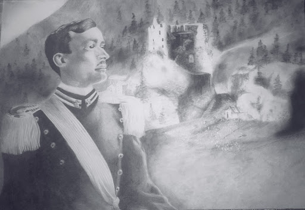
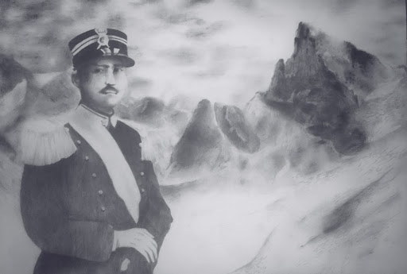
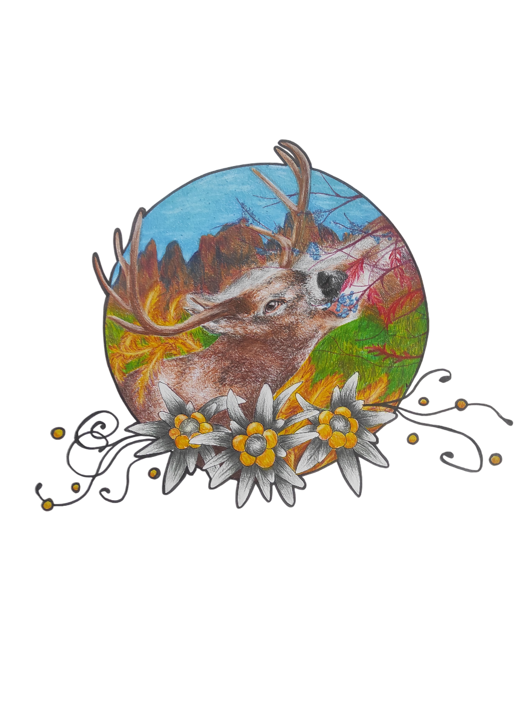

<!DOCTYPE html>
<html>

</html>
<head>
    <link rel="stylesheet" href="style.css">
</head>
<body>
    <div class="quadrato-bianco1">
        <h2>Illustrazione libro prima guerra mondiale</h2>
        
        <div>
            <p class="descrizione">
                In queste illustrazioni, realizzate per un progetto editoriale di prossima uscita, il confine tra personaggio e scenario si fa sottile. Sullo sfondo si scorgono le terre che hanno segnato l'ultimo istante di vita dei due soldati, trasformando il disegno in una cronaca visiva di un addio. Un'anteprima di un viaggio letterario sospeso tra il ricordo e la storia
            </p>
        </div>
        
    </div>
       <div class="quadrato-bianco2">
            <div>
                <h3>
                    ​Un omaggio alle Dolomiti e alla tradizione del posto. Ho unito la forza del cervo alla stella alpina, inserita perché dà il nome all'albergo, usando toni a pastello caldi e polverosi per richiamare i colori e la materia della roccia.
                </h3>
            </div>
             
        <div>

        </div>
    </div>
</body>